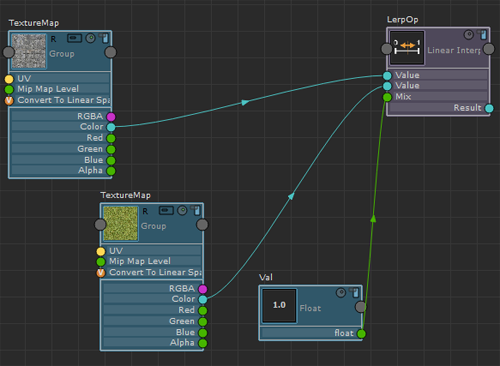
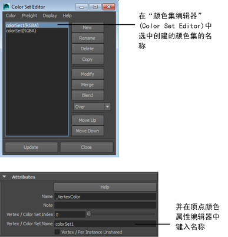

此示例展示了如何创建两个纹理节点并将其融合在一起。
此示例展示了如何：
- 使用 Float 节点融合纹理
- 通过绘制顶点融合纹理
- 乘以纹理以重复它来创建不同效果
创建“ShaderFX”着色器
- 在场景中的对象上单击 (
 ) 并选择“指定新材质”(Assign New Material)，然后从“指定新材质”(Assign New Material)窗口中选择 Shaderfx Shader。
) 并选择“指定新材质”(Assign New Material)，然后从“指定新材质”(Assign New Material)窗口中选择 Shaderfx Shader。
- 单击 ShaderfxShader“属性编辑器”(Attribute Editor)中的 Open ShaderFX 以打开“ShaderFX”编辑器窗口。
会自动创建以下三个节点：“演示”(Color)“TraditionalGameSurfaceShader”和“材质”(Material)。您可以断开“颜色”(Color)节点的连接；下面的工作流不需要它。
创建两个纹理并使用“浮点型”(Float)节点将其融合
- 选择 Hw Shader Nodes > Textures > Texture Map 以创建纹理。
- 在 Texture Map 属性编辑器中，单击 MyTexture/Path 旁边的浏览按钮，并连接第一个纹理文件。在本示例中，使用的是混凝土纹理。
- 重复步骤 1 和 2 创建第二个纹理。在本示例中，使用的是草纹理。
纹理由 www.cgtextures.com 提供。
- 选择 Hw Shader Nodes > Math > Linear Interpolate Mix 来创建 Linear Interpolate Mix 节点，以合并两个纹理。
- 选择 Hw Shader Nodes > Values > Float 以创建 Float 节点。
- 将第一个纹理贴图的 Color 属性添加到 Linear Interpolate Mix 的第一个 Value 属性。
- 将第二个纹理贴图的 Color 属性添加到 Linear Interpolate Mix 的第二个 Value 属性。
- 将 Float 节点的 float 属性连接到 Linear Interpolate Mix 的 Mix 属性。 Float 节点可用于控制每个纹理对融合结果的影响有多大。例如，如果将该值设置为 0.2，则生成的纹理以混凝土纹理为主。如果将该值设置为 0.8，则生成的纹理以草纹理为主。如果将该值设置为 0.5，则会等量混合两种纹理。
- 若要查看结果的样例，请单击 Linear Interpolate 节点顶部的“渲染样例”(Render Swatch)图标
 。
。
- 将“线性插值混合”(Linear Interpolate Mix)的“结果”(Result)属性连接到“TraditionalGameSurfaceShader”节点的“漫反射颜色”(Diffuse Color)属性。现在，可以在 Viewport 2.0 中对着色器进行可视化。
使用“顶点颜色”(Vertex Color)节点融合纹理
- 选择 Hw Shader Nodes > Inputs Common > Vertex Color。
您将使用该顶点颜色而非 Float 节点来融合纹理。
- 断开 Linear Interpolate 与 Float 节点的连接，然后将 Vertex Color 的 Red 属性连接到 Linear Interpolate Mix 的 Mix 属性。这样便可以使用 Red 通道融合纹理。
- 在绘制之前，选择平面。在“polyPlane”节点中，可以将“宽度细分数”(Subdivisions Width)和“高度细分数”(Subdivisions Height)增加到 20（20 只是一个示例）。这可将更多顶点添加到平面，以增强绘制的定义。
- 选择“网格显示 > 应用颜色”(Mesh Display > Apply Color) >
 ，并将默认顶点“颜色”(Color)更改为黑色。这样可将默认顶点颜色设定为黑色。
，并将默认顶点“颜色”(Color)更改为黑色。这样可将默认顶点颜色设定为黑色。 - 选择“网格显示 > 颜色集编辑器”(Mesh Display > Color Set Editor)以打开颜色集编辑器，然后检查已创建的颜色集的名称。
- 在“ShaderFX”编辑器中选择“顶点颜色”(Vertex Color)节点，然后在“顶点/颜色集名称”(Vertex / Color Set Name)字段中输入颜色集的名称。 
- 如果存在多个颜色集，请确保，在“颜色集编辑器”(Color Set Editor)中选择要在绘制前先进行绘制的集。
- 选定平面后，选择“网格显示 > 绘制顶点颜色工具”(Mesh Display > Paint Vertex Color Tool) > 。
现在将部分顶点绘制为红色。绘制为红色的顶点将显示草纹理。
- 在“绘制顶点颜色工具”(Paint Vertex Color Tool)设置中，将“颜色值”(Color value)更改为红色。
- 在平面上进行绘制。绘制为红色的顶点将采用草纹理值。现在，已通过绘制顶点融合纹理。
乘以纹理以在平铺图案中重复它来创建更密集的不同效果
- 选择 Hw Shader Nodes > Inputs Common > UV Set 以创建 UV Set 节点。
- 选择 Hw Shader Nodes > Math > Multiply 以创建 Multiply 节点。
- 选择 Hw Shader Nodes > Values > Float 以创建 Float 节点。
- 将 UV Set 节点的“UV”属性连接到 Multiply 的 Value 属性。
- 将 Float 节点的 float 属性连接到 Multiply 的其他 Value 属性。
- 将 Multiply 节点的 Result 属性连接到 Texture Map （要重复其图案）的“UV”属性。
- 选择 Float 节点，然后在“属性编辑器”(Attribute Editor)中更改其 Value。将其设置为较高的值可以使图案重复更频繁、更密集，而设置为较低的值可以使图案不频繁重复。可以预览生成的图案，方法是单击 Texture Map 节点的“渲染样例”(Render Swatch) 图标。